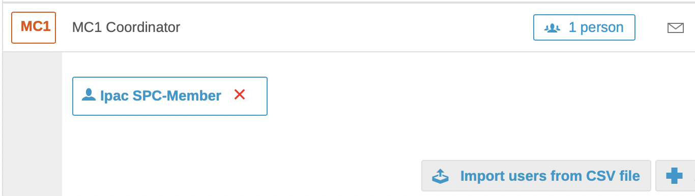
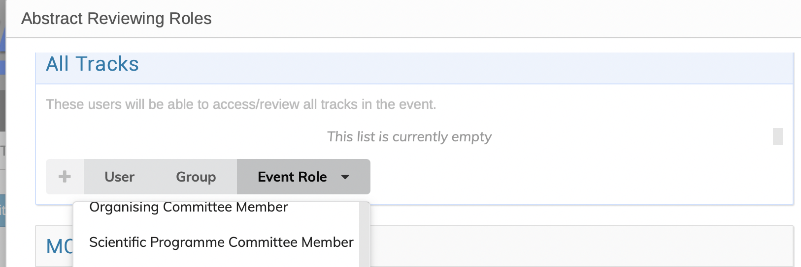
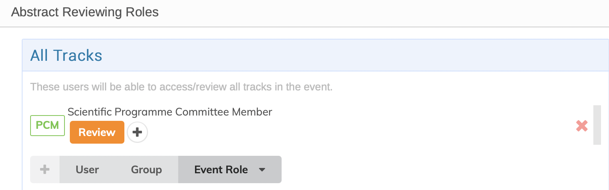
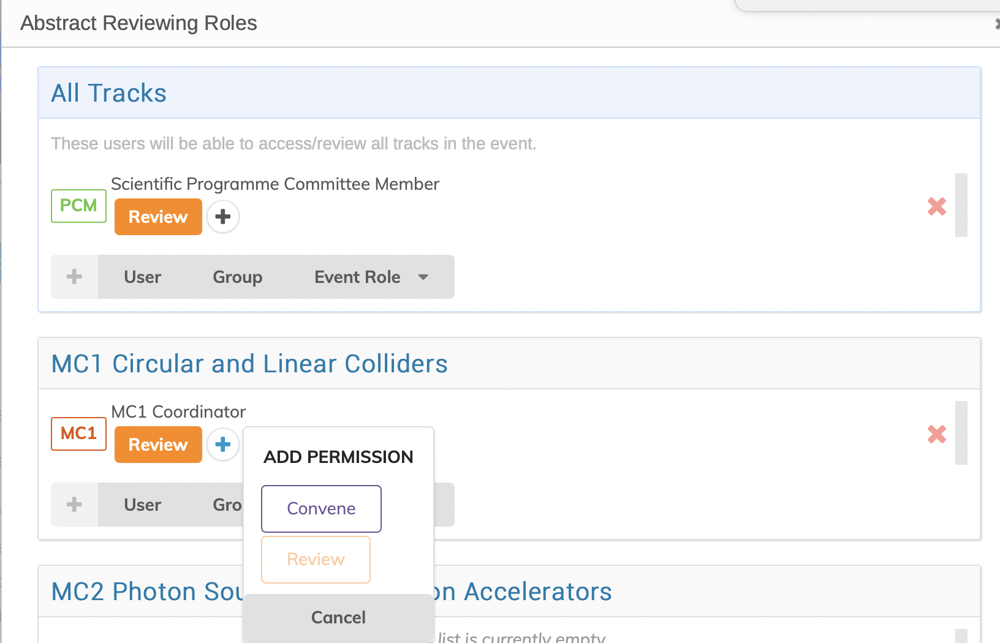
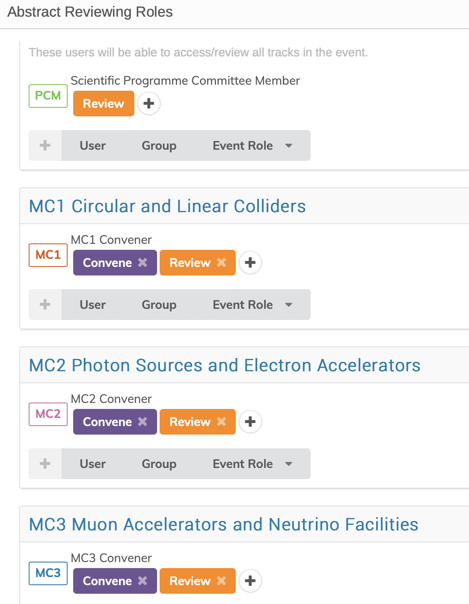
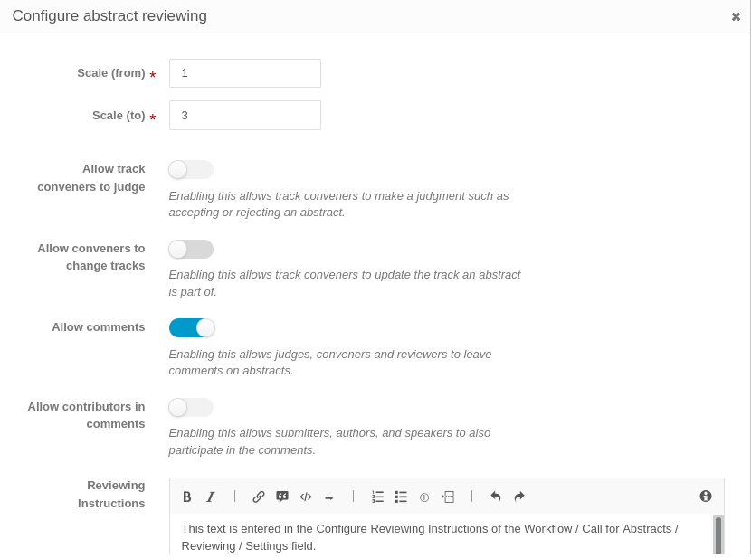
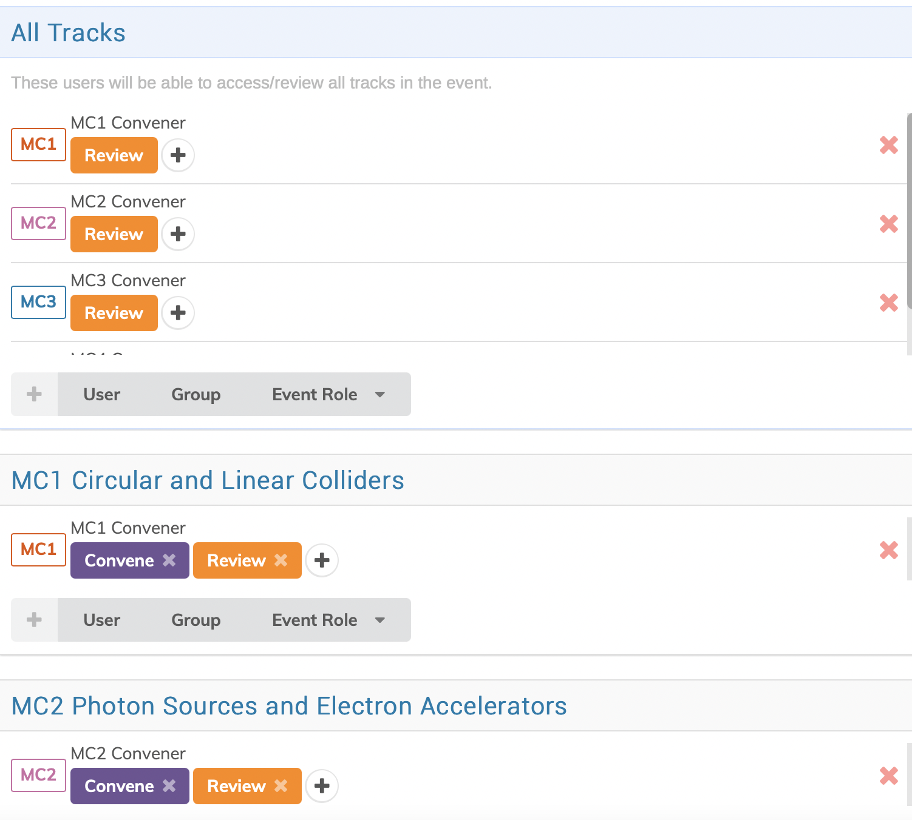
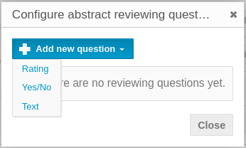
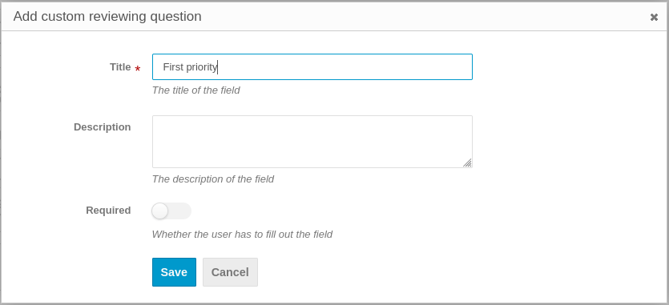
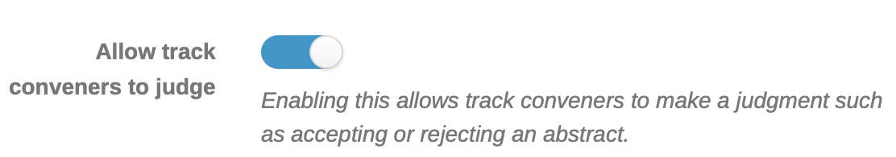

Setting up for the SPC reviewal process
These are the instructions for the Scientific Secretariat/Admin about how to setup Indico for the second and following steps of the workflow for the Submission of Proposals for Invited Oral Presentations.
Overview of the process
As soon as the Abstract Initial QA is complete the Administrator sets up for the SPC to:
a) Verify all Tracks are correct/Propose Track changes
b) Accept/reject proposals for Track changes
c) Prioritize invited oral proposals
d) Accept/Reject proposals for invited orals
The setting up for the above will necessarily be in several distinct steps with careful attention to permissions and deadlines:
- because in order for all SPC members to see all proposals (both for Tracks and Prioritization) they must all have Review privilege on all abstracts submitted. MC Coordinators will have Convene permissions which include the possibility to actually change the Track for the abstracts. SPC members must therefore be warned to limit themselves to proposing Track changes and comments;
- because currently the two activities, a) and c) are grouped in the same screen and it would be possible for SPC members to return to Track changes when that exercise is normally closed.
The process we will follow is:
-
All SPC members are given Review permission on all Tracks, with a deadline to verify the tracks are correct and to propose changes where necessary. After the deadline this permission is revoked so no other changes will be possible during the following step.
-
MC Coordinators (Track Conveners) are assigned Convene permissions in their designated Tracks and are invited to "edit" the proposals for Track changes and eventually change track for the given abstract.
-
The Administrator then prepares the Prioritization as described further on.
-
All SPC members are again given Review privilege to prioritize proposals for invited orals.
-
During the SPC/2 meeting, and following discussion, Conveners are assigned Judging permissions to accept/reject proposals for invited orals, which then automatically become contributions which can be scheduled.
1. Assign Review permission to the SPC
Assigning the privileges/permissions to SPC members and Conveners for the above tasks is done via the Workflows > Call for Abstracts > Reviewing screen which controls the roles with permissions to review, the settings, and questions:

For IPAC, the SPC is normally divided into small working groups composed of a Track Group Coordinator per Track Group (Main Classification) from the hosting region, and a Co-Coordinator from one of the other regions. In some instances, extra persons are added.
Prior therefore to assigning permissions, the Roles of SPC Member, and Track Group Coordinator/Convener/Judge and the relevant persons for each of the Tracks need to be set up in the Organization / Roles setup screen. The Coordinators/Conveners might be called MC1 Convener, MC2 Convener, MC3 Convener etc. for example. Behind each Role, the names of the persons should have been entered:

To set permissions, go to Workflows > Call for Abstracts > Reviewing > Roles. At the top of the page, under All Tracks, click on Event Role and enter the role of SPC Member:

Once the role of SPC Members has been entered, the screen shows this:

Then for each Track enter the role of the corresponding Coordinator/Convener, and click on the "+" to the right to add Convene:

When all Conveners have been entered the screen looks like this:

General settings
It also is necessary to check the Workflows > Call for Abstracts > Reviewing > Settings, in particular:
-
Allow track conveners to judge: for this exercise it should be disabled;
-
Allow conveners to change tracks: for this exercise it should be disabled;
-
Allow comments: for this exercise it should be enabled;
-
Allow contributors in comments: for this exercise it should be disabled;
-
Reviewing Instructions: put here a summary of the instructions the SPC will go through.

Notes on permissions
With the above setup the SPC members will be able to only read comments left with visibility set "To reviewers, conveners and judges". If you want that these people will also be able to read comments left with visibility set "To conveners and judges", plus all the reviews left so far (i.e., proposals for track changes only, per instructions), then it will be needed to give "Convene" permissions to SPC as well. In this case, be sure that the settings "Allow track conveners to judge" and "Allow conveners to change tracks" are NOT set in the Workflow / Call for Abstracts / Settings pane.
Call for the SPC review
Now it's the time to inform the SPC members about what they're asked to do and how.
The Scientific Secretariat will go to the Roles Setup or Participant Roles screens and send an email to the SPC in a similar way of that of the Call for Proposals for Invited Oral Presentations. We suggest that this email includes a link to the detailed instructions for this particular job of the SPC. This activity should last one/two weeks, a deadline needs to be given accordingly.
2. MC Coordinators review Track changes proposals
First action to do after the deadline for submission of proposals for invited oral presentations is to remove Review permissions to the SPC. This way the MC conveners will be able to work through the next phase without fear of having new reviews coming in. To do so, refer to the instructions above and click on the "X" sign in the Review orange button for the Scientific Programme Committee member. After this action the MC Coordinators will still have Convener permissions on their assigned MC/Track - it may be wise to also give them Review permissions on all tracks so that they can access all abstracts.

Next, go to Workflows > Call for Abstracts > Reviewing > Settings and enable the "Allow conveners to change tracks". Remember to save the change.
Call for the MC Coordinators review
As usal, it's time now to notify the MC Coordinators to review the track changes requests. With the email utility of your choice in the Roles Setup or Participant Roles screens, the Scientific Secretariat will send instructions to the Track Conveners, together with a clear deadline. This exercise should last one/two weeks.
3. Preparation for the Prioritization of proposed abstracts
The next task is to reconfigure the abstract reviewing interface via the Workflows > Call for Abstracts > Settings pane:
Work through the various issues:
-
Allow track conveners to judge: keep this disabled until the next step in the workflow
-
Allow conveners to change tracks: disable this to avoid MC Coordinators to make any changes that should have already been performed in the previous step - you can enable it at any time upon special requests
-
Reviewing Instructions: you may want to modify the text to now give the SPC detailed instructions about the scores to be given to the proposals
-
Judgment Instructions: put here the instructions for the MC Coordinators on how to accept (or not) the proposals and turn them into contributions
To be able to enter a priority for consideration of invited oral presentations, it is necessary to configure abstract reviewing questions via the Workflows > Call for Abstracts > Reviewing > Questions interface:

Note that the Questions interface should only be completed when the prioritization begins. It is better to enable this second activity only after the Track change proposals are complete.
For this exercise we are adding a question of type Yes/No:

Normally IPAC conferences use two questions of type Yes/No:
-
First priority
-
Second priority
Any SPC member is asked to select a number of abstracts (general rule of thumb: 5 per MC) to be proposed as invited oral presentations: for those abstracts this person will set question "First priority" to Yes. It is not really needed to strike a No for the non-selected abstracts: this question can be left unanswered.
Same process will be used for a number of abstracts to be proposed as second priority (second choice).
4. Set Review privilege to all SPC members
Similarly to what done in the first step of this process, the SPC members need to have assigned Review privilege again.
MC Coordinators (Conveners) should still have Convene privilege from the start, which won't change.
Call for the prioritization exercise
With the above in place, a mail may be sent to the SPC providing instructions which should guide members through this tasks with appropriate warnings, together with a clear deadline. This exercise should last two/three weeks.
5. Accept/Reject proposals by MC Coordinators during SPC/2
When the prioritization exercise is over it is necessary to give Judgement power to the MC Coordinators (Conveners). This can be done by getting back to the Workflows > Call for Abstracts > Settings pane and enabling the Allow track conveners to judge setting.

This will enable MC Coordinators to actually accept the wanted proposals. It may be convenient to prepare statistics on the scoring gave to the abstracts, prepare an export of the abstracts into XL etc. The MC Coordinators should come to the SPC/2 with a detailed proposal.
Note: these workflow put the responsibility of finally accepting abstracts and turn them into contributions to the MC Coordinators, which need to be well educated about the tool. It may be safer NOT to assign judging permissions to Coordinators/Conveners and leave this to the Scientific Secretariat.